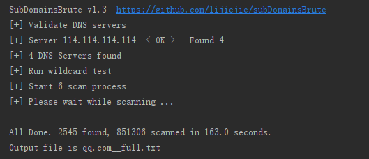

A fast sub domain brute tool for pentesters.
It works with Python3.5+ or Python2.7 while Python3 users can get better performance.
高并发的DNS暴力枚举工具。支持Python3.5+和Python2.7，使用Python3.5+ 效率更高。
Python3.5+ users:
Python2 users
使用大字典，扫描qq.com

Usage: subDomainsBrute.py [options] target.com
Options:
--version show program's version number and exit
-h, --help show this help message and exit
-f FILE File contains new line delimited subs, default is
subnames.txt.
--full Full scan, NAMES FILE subnames_full.txt will be used
to brute
-i, --ignore-intranet
Ignore domains pointed to private IPs
-w, --wildcard Force scan after wildcard test fail
-t THREADS, --threads=THREADS
Num of scan threads, 256 by default
-p PROCESS, --process=PROCESS
Num of scan Process, 6 by default
-o OUTPUT, --output=OUTPUT
Output file name. default is {target}.txt
-w 参数too many file descriptors